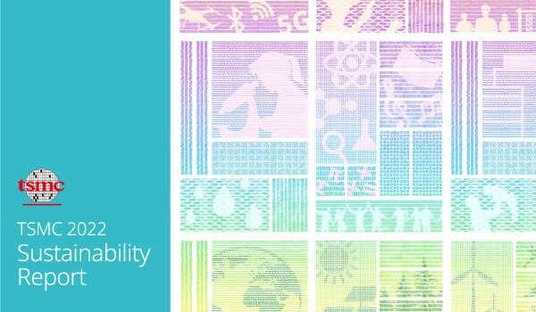
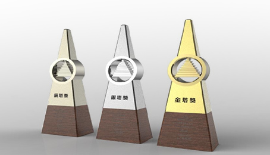

TSMC étend son service de covoiturage en France et en Allemagne, marquant une nouvelle étape dans notre engagement à fournir des solutions de mobilité durables.
> VOIR PLUS
TSMC maintient son engagement envers le développement durable. Nous travaillons à améliorer la qualité. Découvrez comment nous intégrons la durabilité dans toutes nos opérations.
> VOIR PLUSExplorez notre dernière Foire aux Questions (FAQ) pour obtenir des réponses aux questions courantes sur TSMC Covoiturage.
> VOIR PLUS